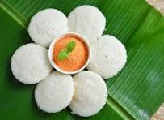

Ingredients
- 2 cups rice
- 1 cup urad dal (split black gram)
- 1 teaspoon fenugreek seeds
- Salt to taste
- Water as needed
Instructions
- Wash and soak rice and fenugreek seeds together for 4-6 hours.
- Wash and soak urad dal separately for 4-6 hours.
- Grind urad dal to a smooth batter and transfer to a large bowl.
- Grind rice and fenugreek seeds to a coarse batter and mix with urad dal batter.
- Add salt and mix well. Let the batter ferment overnight or for 8-10 hours.
- Grease idly molds and pour the batter into the molds.
- Steam for 10-12 minutes or until idlis are cooked through.
- Serve hot with chutney and sambar.
Nutritional Information
Calories: 50 per idly
Protein: 2g
Carbohydrates: 10g
Fat: 0g